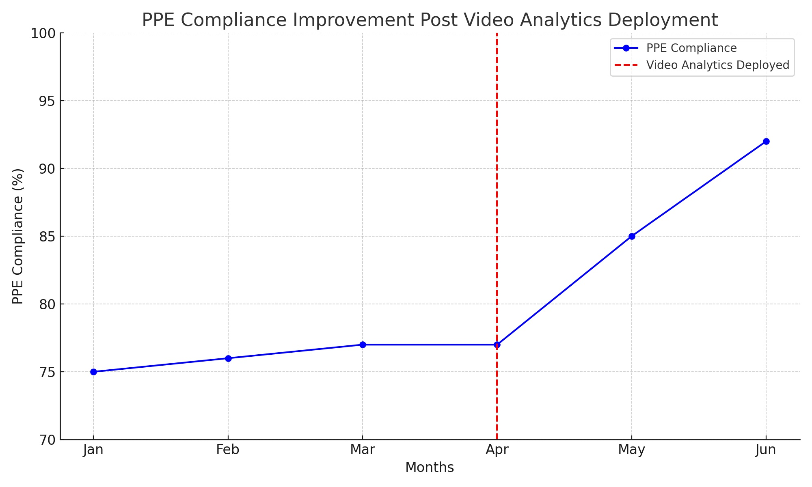

Advancing Workplace Safety: The Impact of AI Video Analytics on Accident Reduction

The importance of workplace safety is paramount in today's fast-paced and risk-prone industrial environments. In high-risk sectors like manufacturing, construction, and logistics, maintaining a safe workspace is not just about compliance with safety standards but also about safeguarding the well-being of employees. Traditional safety measures, while effective to an extent, often fall short in predicting and preventing accidents. This is where the integration of Artificial Intelligence (AI) in the form of video analytics comes into play, offering a proactive and advanced approach to reducing workplace accidents and enhancing overall safety compliance.
In this article, we delve into the transformative impact of AI video analytics on workplace safety. We will explore how this innovative technology is being applied to improve safety protocols, the challenges it helps overcome, and the potential it holds for the future of workplace safety management.
The Persistent Challenge of Workplace Safety
Workplace safety has always been a critical concern, especially in industries characterized by high risks and hazardous conditions. Despite strict safety regulations and comprehensive training programs, accidents in the workplace remain a frequent occurrence, leading to injuries, financial losses, and in severe cases, fatalities. One of the main challenges in maintaining a safe work environment is ensuring consistent compliance with safety protocols. Human error, oversight, and the dynamic nature of industrial settings often contribute to safety lapses. Personal Protective Equipment (PPE) compliance, proper usage of machinery, and adherence to safety guidelines are some areas where lapses frequently occur, posing significant risks to workers' safety.
Traditionally, safety measures have relied heavily on manual monitoring, periodic training, and reactive approaches to accidents. However, these methods have limitations in real-time detection and prevention of safety violations. The need for a more proactive, continuous, and automated approach to safety monitoring is evident, and this is where AI video analytics begins to redefine the paradigm of workplace safety.
AI Video Analytics: A Revolutionary Solution
AI video analytics represents a significant technological advancement in addressing the myriad challenges of workplace safety. By integrating AI with surveillance systems, industries can now monitor safety compliance in real-time, a leap forward from the traditional, more reactive safety measures.
How It Works
AI video analytics utilizes machine learning algorithms to analyze live video feeds from CCTV cameras within the workplace. These systems are trained to recognize various safety-related scenarios such as PPE non-compliance, unsafe behavior near machinery, or unauthorized access to hazardous areas. When a potential safety breach is detected, the system can instantly alert on-site supervisors or safety personnel, allowing for immediate action to be taken.
Advantages Over Traditional Methods
The primary advantage of AI video analytics lies in its proactive nature. Unlike manual monitoring, which is subject to human error and limited by the observer's field of vision and attention span, AI systems provide continuous and unbiased surveillance. This constant vigilance helps in early detection of potential hazards, preventing accidents before they occur. Additionally, AI systems can process vast amounts of data much faster than humans, enabling quicker response times and more effective intervention strategies.
Enhancing Safety Protocols
AI video analytics also enhances existing safety protocols. For example, in environments where PPE is mandatory, AI systems can ensure compliance by identifying individuals not adhering to safety gear requirements. This capability is particularly crucial in high-risk areas where even minor oversights can lead to severe consequences.
The Impact of AI Video Analytics on Workplace Safety
The introduction of AI video analytics has led to a notable improvement in PPE compliance. A survey revealed that on average, 27 injuries leading to days off work could be attributed to each business, with nearly 8 of these preventable through proper PPE use. Financially, 84% of businesses reported losses due to PPE non-compliance, with some losing over £1 million annually. AI video monitoring can effectively reduce these incidents by ensuring that safety protocols are consistently followed.
Various industries have seen significant safety improvements since implementing AI video analytics. For instance, in the manufacturing sector, the integration of AI technology has led to a marked reduction in incidents related to improper use of machinery and PPE non-compliance. In construction, AI has been instrumental in monitoring hazardous areas and preventing accidents due to falls or other safety lapses.
Beyond immediate safety compliance, AI video analytics provides valuable data that can be used to refine safety protocols and training programs. By analyzing patterns and trends in safety violations, businesses can identify areas that require more focused training or additional safety measures. This data-driven approach enables organizations to continually improve their safety standards and protocols.
The reduction in workplace accidents and improved safety compliance also translate into financial and operational benefits for businesses. Fewer accidents mean lower costs related to medical expenses, legal liabilities, and insurance. Additionally, a safer work environment contributes to higher employee morale and productivity, further enhancing the overall efficiency and profitability of the business.
The Future of AI in Workplace Safety
The implementation of AI video analytics is not without its challenges, particularly concerning privacy and ethics. Balancing the benefits of AI monitoring with respect for worker privacy is critical. Companies must adhere to data protection laws and maintain transparent communication about how AI systems are used. Additionally, ensuring that AI systems augment rather than replace human decision-making in safety management is vital.
The future of AI in workplace safety looks promising, with continuous advancements in technology. Predictive analytics, a forthcoming feature of AI systems, is expected to identify potential accidents before they occur. This proactive approach could revolutionize workplace safety, leading to a significant reduction in accidents and enhanced safety protocols.
AI video analytics is a major step forward in the realm of workplace safety. Its ability to monitor, analyze, and respond to safety-related incidents in real time makes it an invaluable tool for businesses. As AI technology continues to evolve, its potential to transform workplace safety is immense, marking a new era in occupational health and safety.